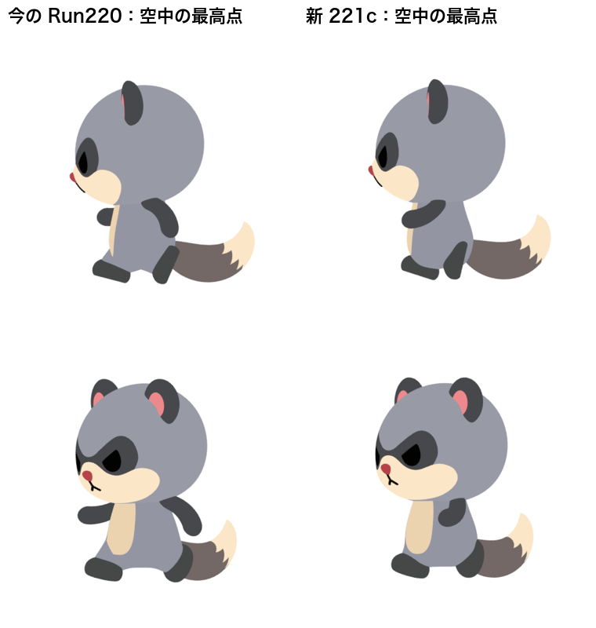
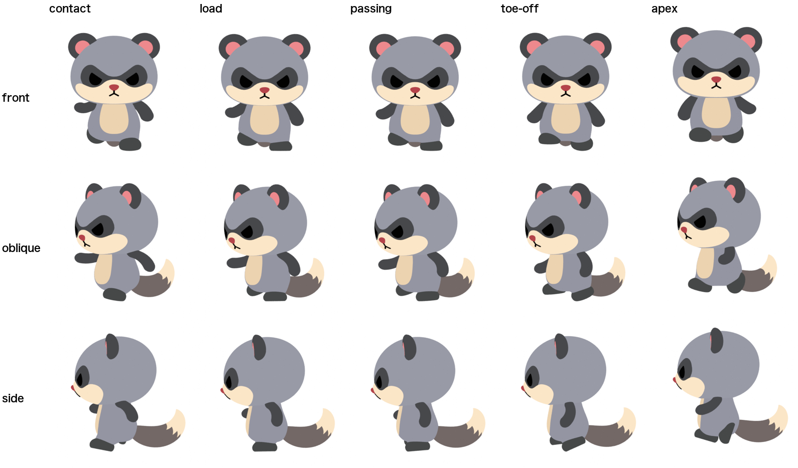
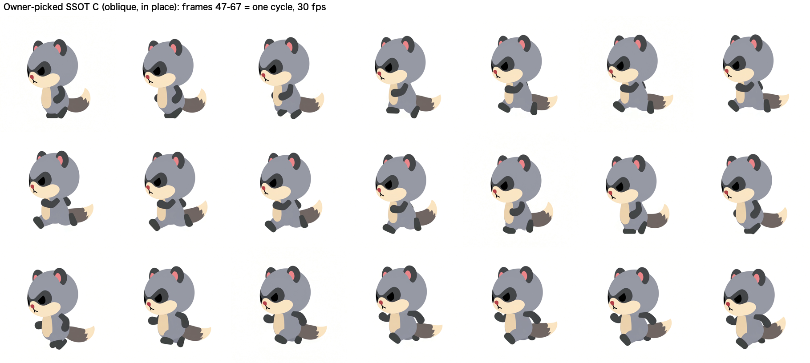

新しい走り 221cを候補として出します。
1/4 速度：

新しい走りは、両足を体の下にたたんで浮きます（小さく弾む走り）。今の走りは、脚を前後に大きく開いて浮きます（勢いは出るが、脚が伸びる）。

参考：選んでいただいた元動画 C の1周期

気に入った場合は「確定」とお伝えください。走り 1.1.0 として登録します。
| 段階 | 内容 |
|---|---|
| レビュー | GPT-6 Astra（最大の思考量）に、元動画・作り方・設計を丸ごとレビューさせました。判定は「改善の余地が明確」。 |
| 設計 | Fable と GPT-6 Astra に、互いの答えを見せずに独立して設計させました。「動画をなぞるのをやめ、着地のタイミングに合わせて走りを設計する」で一致しています。 |
| 検査 | 見た目が悪いのに合格してしまう検査を洗い出し、平均値ではなく一番悪いフレームで判定するようにしました。頭の位置、着地の順序、足のたたみ、足と尻尾のめり込みなども加えています。検査の修正は毎回、別のモデル（GPT）にレビューさせました。 |
| PDCA | 1周目は、揺れが接地中の沈みに回ってしまい不合格。2周目は、足を床基準で描いていたため効果なし（検査で自動停止）。3周目で、空中の足を体からのたたみ量で設計し直して合格しました。 |